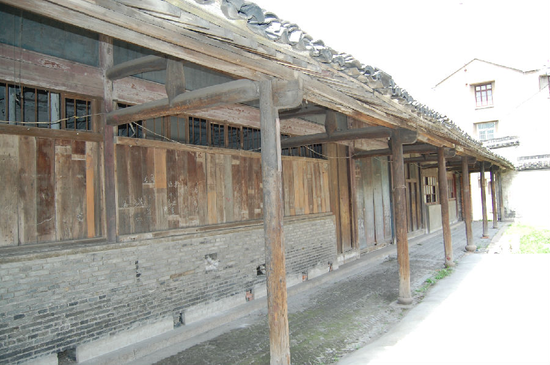

嘉兴市文物保护网 · 市级文物保护点 · 2020-11-06 · 原文

斗丰弄倪家大宅建筑群位于嘉兴市秀洲区油车港镇澄溪村镇中路斗丰弄原镇粮站南面，据当地村民介绍和形制判断为民国时期所建。建筑群占地面积1600平方米，坐北朝南，砖木结构，建筑构造体量大，结构复杂，梁架穿枋、抬梁式并存，总占地面积1600余平方米，现存房屋18间，整体呈三进四合式布局，一进开间已重新划分（作为粮站办公区）。二、三进房屋的部分二层也已改建（作为粮站仓库）。屋顶为硬山顶、前出檐。该建筑群规模较大，用材粗，做工考究，雕工细致，具有较高的艺术和历史价值。2009年公布为嘉兴市文物保护点。